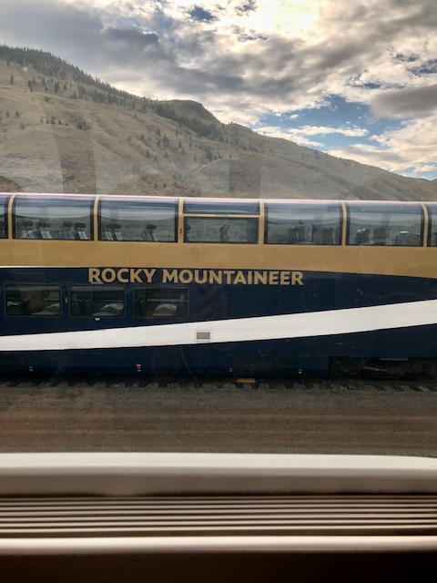
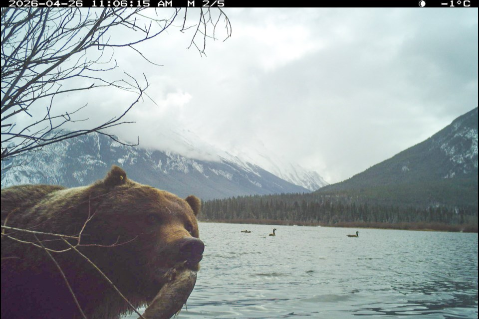
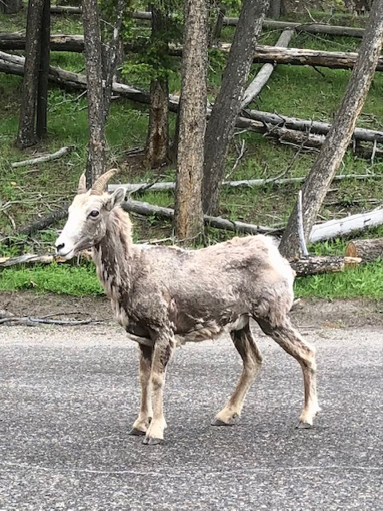
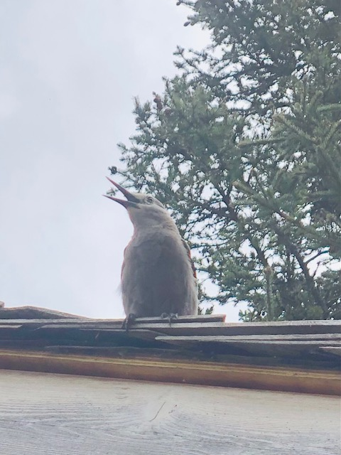
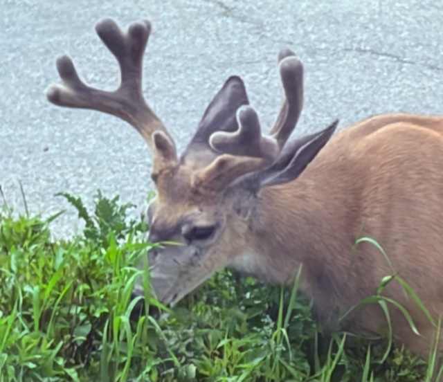

Banff National Park, located in Alberta’s Rocky Mountains, is Canada’s first national park established in 1885 and is the third oldest in the world after Yellowstone and Royal National Park in Australia. The largest glaciers in the Rockies, beautiful alpine forests, lakes in astonishing colors of a milky blue and green depending on the amount of rock flour created when glaciers grind over bedrock, three almost year-round ski runs, and animals such as The Boss, a grizzly bear who often hangs out by the train tracks with his girlfriend of the moment, attract international adventurers whom nature doesn’t disappoint. At 4500 feet the air is clear, the temperatures mild in summertime and the desire to give yourself over to its majesty compelling.

Using indigenous guides, European explorers first traversed the area and established trade routes in the 1800s. In 1883, three railway workers stumbled upon the natural hot springs on Sulphur Mountain which quickly became a tourist attraction for wealthy visitors, increasing the railroads’ profits and bolstering the final leg of construction. Now it is only an hour and a half from Calgary on the Trans-Canada highway. Banff was born as a tourist destination and has remained ahead of its time for visitors, many like us who wanted to tie our adventure to railway travel which is so much a part of its dramatic history.


We arrived in Banff in time for Canada Day July 1 on the Rocky Mountaineer, the luxury dome car train we wrote about last week. Our two-day trip from Vancouver took us through the spectacular spiral tunnels and up over Kicking Horse Pass to the town of Banff in the Bow River Valley. The luxurious Fairmont Banff Springs Hotel and Fairmont Chateau Lake Louise, stately hotels established by the Canadian Pacific Railroad early in the 20th century, still welcome visitors who take in the beauty of Moraine Lake and Lake Louise, sometimes from the hiking trails or from a window in a hotel bar where you are served by young people from around the world who describe it as the ultimate summer job.

To live in Banff you must have a job there, and meeting people who work for tourist companies or the hotels provided fascinating conversation about what they like to do on their days off. While in Los Angeles every waiter you meet might be an aspiring actor, here everyone is a budding ski guide. Our superb tour guide Ellie from Radventures told us that one of its other guides starts each day with a marathon bike ride and ends it with a run up a mountain when his tours are done. Our Japanese bus driver to Calgary where we flew back from the week’s trip told us that he uses his three-hour lunch break from ferrying skiers up the mountain in winter to ski daily. A Canadian waitress at dinner at the Fairmont Banff Springs who had taken a year off to ski in Japan raved about skiing in Banff. A German bartender can’t wait to return to work there next summer.

Our half-day lunch tour of Lake Louise, about 20 minutes from Banff, and Lake Moraine couldn’t have been better. With small group charm as opposed to big bus chaos, Ellie, a New Zealander, captured the spirit of the place. She drove us from lake to lake with side trips she thought we might enjoy. Picnicking and walking around the lakes, with the time to take a quick canoe trip if we choose, we felt that Ellie was the best tour guide we’ve ever had. So knowledgeable, fun, engaging - the embodiment of Banff’s passion for nature and the outdoors. Whether it was spotting big horn sheep to explaining the stunning crystal blue waters of Lakes Louise and Moraine, she exemplified the true spirit of the Canadian Rockies.
It is no cliché that Canadians are just so friendly, and the international crowd feels that spirit. Ellie’s tour was on Canada Day, July 1, and she borrowed a flag for our group which we waved enthusiastically while tourists from around the world wished everyone “Happy Canada Day.”

High on Mount Rundle you can spot ski tracks even in July and we saw several suntanned skiers off with their skis for a run. The altitude of the ski slopes can reach over 6500 ft. Mount Rundle is one of several iconic mountains including Sulfur Mountain with the Banff Gondola and a summit restaurant. You can’t miss majestic Castle Mountain, a fortress of peaks between Banff and Lake Louise. Turreted Castle Mountain was named for General Dwight D. Eisenhower in 1946 but the name was changed back to Castle Mountain and one peak is today known as Eisenhower Peak. Local lore says that when the general came for dedication he decided to play golf, his favorite sport, instead skipping the ceremonies. Local memories ran deep and it was officially re-named Castle Mountain in 1979.

Banff was an important place for many First Nation Peoples who hunted and foraged in the abundant wilderness. The names they gave to the peaks translated into names like sleeping buffalo, colloquial terms used by many Banff residents. It was said that the Nakoda followed the spirit of the buffalo to find a place to call home. When the buffalo spirit lay down to rest as depicted by a mountain of that shape they knew they had found their place.

Our guide Ellie described her friend’s reaction when she gave her address as the corner of Bear and Marmot streets, still an appreciation for the animal world is everywhere. There have been spotted 311 species of birds and 53 species of mammals. Getting a glimpse of The Boss on an adjacent railroad track was a celebrity sighting: the 700-pound bear even has a restaurant downtown named for him. Canadian Justin Bieber and his wife Hailey are said to have spotted a lynx on a hike around Lake Louise. Young big horn sheep who love to lick salt from the rocks seemed not at all worried when we stopped to take their photos.

We heard his special call and watched the Clark’s Nutcracker, one very busy bird, fly from branch to branch at Moraine Lake. It lives on pine nuts, burying seeds in groups of 1-15, up to 98,000 per season in summer then remembering in winter where it left them. It is believed that they can recall where they buried 30,000 seeds each summer even in several feet of snow.
Clark’s nutcracker is an integral part of the whitebark pine restoration process to insure that healthy trees continue to grow. The whitebark pine cone is unable to open on its own and is dependent on the Clark’s Nutcracker whose long sharp beak can easily open and spread the seeds and this symbiotic relationship makes the bird’s survival possible.

As our tour bus took us out onto the Trans-Canada Highway for a brief time, we were impressed to see the wildlife overpasses and tunnels created to allow animals to pass unharmed. In Banff, combined with fencing along the road, the structures have reduced animal-vehicle collusions by almost 80 percent. Featuring cameras among the trees and vegetation planted there, data reveals that over 150,000 animals have successfully crossed.

These passageways remind us of Banff National Park’s commitment to saving animals internationally. Like Jasper National Park which released 14 grey wolves back into Yellowstone, Banff participates in animal exchange programs which can save endangered species. The indigenous people have been particularly helpful. Wild plains bison, absent for over a century, now roam free there.
Banff from the first has attracted people who seek to be a part nature’s majesty. It is also a place of ecological triumph as well as personal challenge to do your very best whether skiing, hiking or just being quiet and totally thankful.

